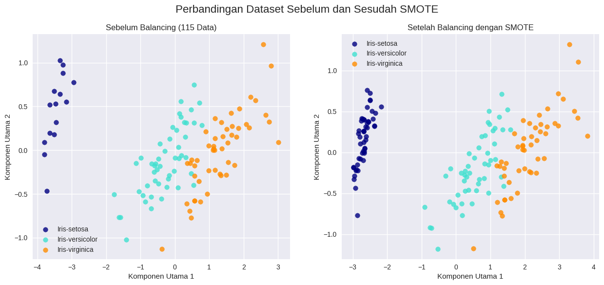
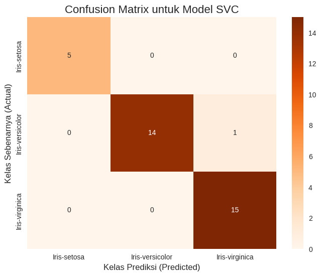

Balancing#
Query data dari database#
!pip install pandas psycopg2-binary mysql-connector-python
!pip install -q pandas matplotlib seaborn sqlalchemy psycopg2 scikit-learn imbalanced-learn
Requirement already satisfied: pandas in /opt/hostedtoolcache/Python/3.10.19/x64/lib/python3.10/site-packages (2.3.3)
Requirement already satisfied: psycopg2-binary in /opt/hostedtoolcache/Python/3.10.19/x64/lib/python3.10/site-packages (2.9.11)
Collecting mysql-connector-python
Downloading mysql_connector_python-9.5.0-cp310-cp310-manylinux_2_28_x86_64.whl.metadata (7.3 kB)
Requirement already satisfied: numpy>=1.22.4 in /opt/hostedtoolcache/Python/3.10.19/x64/lib/python3.10/site-packages (from pandas) (2.2.6)
Requirement already satisfied: python-dateutil>=2.8.2 in /opt/hostedtoolcache/Python/3.10.19/x64/lib/python3.10/site-packages (from pandas) (2.9.0.post0)
Requirement already satisfied: pytz>=2020.1 in /opt/hostedtoolcache/Python/3.10.19/x64/lib/python3.10/site-packages (from pandas) (2025.2)
Requirement already satisfied: tzdata>=2022.7 in /opt/hostedtoolcache/Python/3.10.19/x64/lib/python3.10/site-packages (from pandas) (2025.3)
Requirement already satisfied: six>=1.5 in /opt/hostedtoolcache/Python/3.10.19/x64/lib/python3.10/site-packages (from python-dateutil>=2.8.2->pandas) (1.17.0)
Downloading mysql_connector_python-9.5.0-cp310-cp310-manylinux_2_28_x86_64.whl (34.1 MB)
?25l ━━━━━━━━━━━━━━━━━━━━━━━━━━━━━━━━━━━━━━━━ 0.0/34.1 MB ? eta -:--:--
━━━━━━━━━━━━━━━━━━━━━━━━━━━━━━━━━━━━━━━━ 34.1/34.1 MB 217.9 MB/s 0:00:00
?25h
Installing collected packages: mysql-connector-python
Successfully installed mysql-connector-python-9.5.0
import pandas as pd
import psycopg2
import mysql.connector
import os
try:
# --- Langkah 1: Hubungkan ke Database dan Muat Data ---
print("Menghubungkan ke database Anda...")
# Koneksi ke PostgreSQL (sepal data)
conn_pg = psycopg2.connect(
host="pg-21171808-postgresql21-170.c.aivencloud.com",
database="defaultdb",
user="avnadmin",
password="AVNS_emxcRXd6pI6F-9XSrNU",
port="13844"
)
data_sepal = pd.read_sql("SELECT * FROM sepal", conn_pg)
conn_pg.close()
print(f"✅ Berhasil memuat {len(data_sepal)} baris dari PostgreSQL.")
# Koneksi ke MySQL (petal data)
conn_mysql = mysql.connector.connect(
host="mysql-2b4a76d5-mysql21-170.c.aivencloud.com",
database="defaultdb",
user="avnadmin",
password="AVNS_0XEo8Lr33wvHuOHjVZq",
port="14185"
)
data_petal = pd.read_sql("SELECT * FROM petal", conn_mysql)
conn_mysql.close()
print(f"✅ Berhasil memuat {len(data_petal)} baris dari MySQL.")
# --- Langkah 2: Menggabungkan Dua DataFrame ---
print("\nMenggabungkan data sepal dan petal...")
# PERBAIKAN DI SINI: Menggabungkan hanya berdasarkan 'id'
iris_gabungan = pd.merge(data_sepal, data_petal, on='id')
print(f"Data berhasil digabungkan. Total baris: {len(iris_gabungan)}")
# --- Langkah 3: Menghapus 35 Data Iris-setosa ---
print("\nMenghapus 35 baris data Iris-setosa...")
indeks_setosa = iris_gabungan[iris_gabungan['class'] == 'Iris-setosa'].index
indeks_untuk_dihapus = indeks_setosa[:35]
iris_final = iris_gabungan.drop(indeks_untuk_dihapus)
print("Proses penghapusan selesai.")
# --- Langkah 4: Verifikasi Hasil ---
print("\n--- Verifikasi Hasil ---")
jumlah_setosa_awal = len(iris_gabungan[iris_gabungan['class'] == 'Iris-setosa'])
jumlah_setosa_akhir = len(iris_final[iris_final['class'] == 'Iris-setosa'])
print(f"Jumlah total data sebelum dihapus: {len(iris_gabungan)} baris")
print(f"Jumlah 'Iris-setosa' sebelum dihapus: {jumlah_setosa_awal} baris")
print("-" * 25)
print(f"Jumlah 'Iris-setosa' setelah dihapus: {jumlah_setosa_akhir} baris")
print(f"Jumlah total data setelah dihapus: {len(iris_final)} baris")
# --- Langkah 5: Simpan Hasil ke File CSV ---
nama_file = "iris_final_from_db.csv"
iris_final.to_csv(nama_file, index=False)
print(f"\n✅ Data final telah disimpan ke file '{nama_file}'.")
except Exception as e:
print(f"\n❌ Terjadi kesalahan: {e}")
Menghubungkan ke database Anda...
❌ Terjadi kesalahan: could not translate host name "pg-21171808-postgresql21-170.c.aivencloud.com" to address: Name or service not known
Visualisasi Dataset#
import matplotlib.pyplot as plt
import seaborn as sns
plt.figure(figsize=(8, 5))
sns.scatterplot(
data=iris_final,
x="petal_length",
y="petal_width",
hue="class",
palette="bright",
markers="o",
s=40,
alpha=0.9
)
plt.title("Visualisasi Data Iris", fontsize=12)
plt.xlabel("Petal Length (cm)", fontsize=9)
plt.ylabel("Petal Width (cm)", fontsize=9)
plt.legend(title="Class")
plt.grid(True)
plt.show()
plt.clf()
print(len(iris_final))
---------------------------------------------------------------------------
NameError Traceback (most recent call last)
Cell In[3], line 6
2 import seaborn as sns
4 plt.figure(figsize=(8, 5))
5 sns.scatterplot(
----> 6 data=iris_final,
7 x="petal_length",
8 y="petal_width",
9 hue="class",
10 palette="bright",
11 markers="o",
12 s=40,
13 alpha=0.9
14 )
15 plt.title("Visualisasi Data Iris", fontsize=12)
16 plt.xlabel("Petal Length (cm)", fontsize=9)
NameError: name 'iris_final' is not defined
<Figure size 800x500 with 0 Axes>
Reduksi Dimensi menggunakan PCA#
import pandas as pd
import matplotlib.pyplot as plt
import seaborn as sns
from sklearn.preprocessing import StandardScaler
from sklearn.decomposition import PCA
# --- Langkah 1: Persiapan dan Scaling Data ---
# Pastikan DataFrame 'iris_final' sudah ada dan berisi 115 data Anda.
# Pisahkan fitur numerik yang akan direduksi
numeric_features = ['sepal_length', 'sepal_width', 'petal_length', 'petal_width']
X = iris_final[numeric_features]
y_class = iris_final['class']
# PCA sensitif terhadap skala, jadi kita perlu menstandarkan data terlebih dahulu
scaler = StandardScaler()
X_scaled = scaler.fit_transform(X)
print("Data berhasil di-scaling.")
# --- Langkah 2: Menerapkan PCA ---
# Kita akan mereduksi 4 fitur menjadi 2 Komponen Utama (Principal Components)
pca = PCA(n_components=2)
X_pca = pca.fit_transform(X_scaled)
print("PCA berhasil diterapkan.")
# --- Langkah 3: Menganalisis Hasil ---
# Lihat seberapa banyak informasi (varians) yang ditangkap oleh 2 komponen baru
explained_variance = pca.explained_variance_ratio_
print(f"\nVarians yang dijelaskan oleh Komponen Utama 1: {explained_variance[0]:.2%}")
print(f"Varians yang dijelaskan oleh Komponen Utama 2: {explained_variance[1]:.2%}")
print(f"Total varians yang dijelaskan oleh 2 komponen: {sum(explained_variance):.2%}")
# Buat DataFrame baru dari hasil PCA untuk kemudahan analisis dan visualisasi
pca_df = pd.DataFrame(data=X_pca, columns=['PC1', 'PC2'])
pca_df = pd.concat([pca_df, y_class.reset_index(drop=True)], axis=1)
print("\nPratinjau DataFrame hasil PCA:")
print(pca_df.head())
# --- Langkah 4: Visualisasi Hasil PCA ---
plt.style.use('seaborn-v0_8')
plt.figure(figsize=(10, 7))
sns.scatterplot(data=pca_df, x='PC1', y='PC2', hue='class', s=100, alpha=0.8)
plt.title('Hasil Reduksi Dimensi dengan PCA pada 115 Data Iris', fontsize=16)
plt.xlabel(f'Komponen Utama 1 ({explained_variance[0]:.0%} Varians)')
plt.ylabel(f'Komponen Utama 2 ({explained_variance[1]:.0%} Varians)')
plt.legend(title='Kelas Bunga')
plt.grid(True, alpha=0.3)
plt.show()
Data berhasil di-scaling.
PCA berhasil diterapkan.
Varians yang dijelaskan oleh Komponen Utama 1: 67.40%
Varians yang dijelaskan oleh Komponen Utama 2: 25.99%
Total varians yang dijelaskan oleh 2 komponen: 93.39%
Pratinjau DataFrame hasil PCA:
PC1 PC2 class
0 -3.342629 0.956326 Iris-setosa
1 -2.912710 1.849874 Iris-setosa
2 -3.388272 0.651115 Iris-setosa
3 -3.751197 0.289592 Iris-setosa
4 -3.125458 1.481450 Iris-setosa
Visualisasi Dataset PCA dan LDA#
import matplotlib.pyplot as plt
import pandas as pd
from sklearn.decomposition import PCA
from sklearn.discriminant_analysis import LinearDiscriminantAnalysis
# --- Langkah 1: Persiapan Data dari DataFrame 'iris_final' Anda ---
# Pastikan DataFrame 'iris_final' sudah ada dari skrip sebelumnya
# A. Pisahkan fitur (X) dan target (y)
numeric_features = ['sepal_length', 'sepal_width', 'petal_length', 'petal_width']
X = iris_final[numeric_features].values
y_text = iris_final['class']
# B. Ubah target dari teks menjadi angka (0, 1, 2) karena LDA memerlukannya
target_names = ['Iris-setosa', 'Iris-versicolor', 'Iris-virginica']
target_map = {name: i for i, name in enumerate(target_names)}
y = y_text.map(target_map).values
# --- Langkah 2: Terapkan PCA pada 115 Data ---
pca = PCA(n_components=2)
# PCA hanya memerlukan fitur (X)
X_r = pca.fit(X).transform(X)
# --- Langkah 3: Terapkan LDA pada 115 Data ---
lda = LinearDiscriminantAnalysis(n_components=2)
# LDA memerlukan fitur (X) dan target (y) untuk menemukan pemisahan terbaik
X_r2 = lda.fit(X, y).transform(X)
# Cetak persentase varians yang dijelaskan oleh PCA
print(
"Persentase varians yang dijelaskan oleh PCA (dua komponen pertama): %s"
% str(pca.explained_variance_ratio_)
)
# --- Langkah 4: Visualisasi Hasil ---
plt.style.use('seaborn-v0_8')
colors = ["navy", "turquoise", "darkorange"]
lw = 2
# Plot untuk PCA
plt.figure(figsize=(8, 6))
for color, i, target_name in zip(colors, [0, 1, 2], target_names):
plt.scatter(
X_r[y == i, 0], X_r[y == i, 1], color=color, alpha=0.8, lw=lw, label=target_name
)
plt.legend(loc="best", shadow=False, scatterpoints=1)
plt.title("PCA dari 115 Data Iris")
plt.xlabel("Komponen Utama 1")
plt.ylabel("Komponen Utama 2")
# Plot untuk LDA
plt.figure(figsize=(8, 6))
for color, i, target_name in zip(colors, [0, 1, 2], target_names):
plt.scatter(
X_r2[y == i, 0], X_r2[y == i, 1], alpha=0.8, color=color, label=target_name
)
plt.legend(loc="best", shadow=False, scatterpoints=1)
plt.title("LDA dari 115 Data Iris")
plt.xlabel("Diskriminan Linier 1")
plt.ylabel("Diskriminan Linier 2")
plt.show()
Persentase varians yang dijelaskan oleh PCA (dua komponen pertama): [0.8962252 0.0647599]
Balancing Menggunakan SMOTE#
!pip install imbalanced-learn
Requirement already satisfied: imbalanced-learn in /usr/local/lib/python3.12/dist-packages (0.14.0)
Requirement already satisfied: numpy<3,>=1.25.2 in /usr/local/lib/python3.12/dist-packages (from imbalanced-learn) (2.0.2)
Requirement already satisfied: scipy<2,>=1.11.4 in /usr/local/lib/python3.12/dist-packages (from imbalanced-learn) (1.16.2)
Requirement already satisfied: scikit-learn<2,>=1.4.2 in /usr/local/lib/python3.12/dist-packages (from imbalanced-learn) (1.6.1)
Requirement already satisfied: joblib<2,>=1.2.0 in /usr/local/lib/python3.12/dist-packages (from imbalanced-learn) (1.5.2)
Requirement already satisfied: threadpoolctl<4,>=2.0.0 in /usr/local/lib/python3.12/dist-packages (from imbalanced-learn) (3.6.0)
import numpy as np
from collections import Counter
# SMOTE
from imblearn.over_sampling import SMOTE
# --- Persiapan ---
# Pastikan variabel X (fitur) dan y (target numerik) sudah ada
# dari skrip analisis PCA/LDA sebelumnya.
# 1. Tampilkan distribusi kelas SEBELUM balancing
print("Distribusi Kelas Sebelum Balancing:")
print(Counter(y))
# 2. Inisialisasi dan terapkan SMOTE
# SMOTE akan membuat sampel baru untuk kelas minoritas (kelas 0: Iris-setosa)
# menggunkan smote
smote = SMOTE(random_state=42)
X_resampled, y_resampled = smote.fit_resample(X, y)
# 3. Tampilkan distribusi kelas SETELAH balancing
print("\nDistribusi Kelas Setelah Balancing dengan SMOTE:")
print(Counter(y_resampled))
# 4. Tampilkan perbandingan ukuran dataset
print(f"\nUkuran dataset asli: {X.shape}")
print(f"Ukuran dataset setelah di-resample: {X_resampled.shape}")
Distribusi Kelas Sebelum Balancing:
Counter({np.int64(1): 50, np.int64(2): 50, np.int64(0): 15})
Distribusi Kelas Setelah Balancing dengan SMOTE:
Counter({np.int64(0): 50, np.int64(1): 50, np.int64(2): 50})
Ukuran dataset asli: (115, 4)
Ukuran dataset setelah di-resample: (150, 4)
import matplotlib.pyplot as plt
# --- Visualisasi Data SEBELUM Balancing (menggunakan hasil PCA sebelumnya) ---
plt.figure(figsize=(15, 6))
plt.suptitle('Perbandingan Dataset Sebelum dan Sesudah SMOTE', fontsize=16)
# Plot 1: Sebelum Smote
plt.subplot(1, 2, 1)
for color, i, target_name in zip(colors, [0, 1, 2], target_names):
plt.scatter(X_r[y == i, 0], X_r[y == i, 1], color=color, alpha=0.8, label=target_name)
plt.title('Sebelum Balancing (115 Data)')
plt.xlabel('Komponen Utama 1')
plt.ylabel('Komponen Utama 2')
plt.legend()
# --- Visualisasi Data SETELAH Balancing ---
# Kita perlu menjalankan PCA pada data yang sudah di-resample untuk bisa memplotnya
pca_resampled = PCA(n_components=2)
X_r_resampled = pca_resampled.fit(X_resampled).transform(X_resampled)
# Plot 2: Setelah smote
plt.subplot(1, 2, 2)
for color, i, target_name in zip(colors, [0, 1, 2], target_names):
plt.scatter(X_r_resampled[y_resampled == i, 0], X_r_resampled[y_resampled == i, 1],
color=color, alpha=0.8, label=target_name)
plt.title('Setelah Balancing dengan SMOTE')
plt.xlabel('Komponen Utama 1')
plt.ylabel('Komponen Utama 2')
plt.legend()
plt.show()

# Import library yang diperlukan
import pandas as pd
from collections import Counter
from sklearn.model_selection import train_test_split
from imblearn.over_sampling import SMOTE
from sklearn.svm import SVC
from sklearn.metrics import accuracy_score, classification_report, confusion_matrix
import seaborn as sns
import matplotlib.pyplot as plt
# --- LANGKAH 1: PERSIAPAN DATA ---
# Pastikan variabel X (fitur) dan y (target numerik) dari 115 data Anda sudah tersedia.
# Juga, pastikan 'target_names' sudah ada untuk label laporan.
# target_names = ['Iris-setosa', 'Iris-versicolor', 'Iris-virginica']
# Membagi data menjadi 70% data latih dan 30% data uji
print("Membagi dataset menjadi data latih dan data uji...")
X_train, X_test, y_train, y_test = train_test_split(
X, y, test_size=0.3, random_state=42, stratify=y)
# Menampilkan distribusi kelas sebelum SMOTE
print("\nDistribusi Kelas pada Data Latih SEBELUM SMOTE:")
distribusi_sebelum = {target_names[i]: count for i, count in sorted(Counter(y_train).items())}
print(distribusi_sebelum)
# Menerapkan SMOTE pada data training
print("\nMenerapkan SMOTE pada data latih...")
smote = SMOTE(random_state=42)
X_train_smote, y_train_smote = smote.fit_resample(X_train, y_train)
# Menampilkan distribusi kelas setelah SMOTE
print("\nDistribusi Kelas pada Data Latih SETELAH SMOTE:")
distribusi_setelah = {target_names[i]: count for i, count in sorted(Counter(y_train_smote).items())}
print(distribusi_setelah)
print("="*55)
Membagi dataset menjadi data latih dan data uji...
Distribusi Kelas pada Data Latih SEBELUM SMOTE:
{'Iris-setosa': 10, 'Iris-versicolor': 35, 'Iris-virginica': 35}
Menerapkan SMOTE pada data latih...
Distribusi Kelas pada Data Latih SETELAH SMOTE:
{'Iris-setosa': 35, 'Iris-versicolor': 35, 'Iris-virginica': 35}
=======================================================
Evaluasi dengan Support Vector Machine#
# Import library yang diperlukan
from sklearn.svm import SVC
from sklearn.metrics import accuracy_score, classification_report
# --- 1. Membuat dan Melatih Model SVC ---
# Membuat instance model SVC
svc_model = SVC(random_state=42)
# Melatih model menggunakan data training yang sudah di-oversampling
print("Melatih model SVC...")
svc_model.fit(X_train_smote, y_train_smote)
print("Model berhasil dilatih.")
# --- 2. Melakukan Prediksi pada Data Uji ---
# Melakukan prediksi pada data uji yang asli
print("\nMelakukan prediksi pada data uji...")
y_pred_svc = svc_model.predict(X_test)
# --- 3. Mengevaluasi Performa Model SVC ---
print("Mengevaluasi performa model...")
accuracy_svc = accuracy_score(y_test, y_pred_svc)
report_svc = classification_report(y_test, y_pred_svc)
print("\n" + "="*45)
print(" HASIL EVALUASI MODEL SUPPORT VECTOR MACHINE (SVC) ")
print("="*45)
print(f"\nAkurasi Model SVC: {accuracy_svc:.4f} ({accuracy_svc:.2%})")
print("\nLaporan Klasifikasi SVC:")
print(report_svc)
Melatih model SVC...
Model berhasil dilatih.
Melakukan prediksi pada data uji...
Mengevaluasi performa model...
=============================================
HASIL EVALUASI MODEL SUPPORT VECTOR MACHINE (SVC)
=============================================
Akurasi Model SVC: 0.9714 (97.14%)
Laporan Klasifikasi SVC:
precision recall f1-score support
0 1.00 1.00 1.00 5
1 1.00 0.93 0.97 15
2 0.94 1.00 0.97 15
accuracy 0.97 35
macro avg 0.98 0.98 0.98 35
weighted avg 0.97 0.97 0.97 35
Visualisasi Confusion Matrix#
# 3. Visualisasi Confusion Matrix
cm_svc = confusion_matrix(y_test, y_pred_svc)
plt.figure(figsize=(8, 6))
sns.heatmap(cm_svc, annot=True, fmt='d', cmap='Oranges',
xticklabels=target_names, yticklabels=target_names)
plt.title('Confusion Matrix untuk Model SVC', fontsize=16)
plt.ylabel('Kelas Sebenarnya (Actual)', fontsize=12)
plt.xlabel('Kelas Prediksi (Predicted)', fontsize=12)
plt.show()
